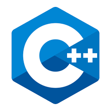

[C++] tuple
* 개인적인 공부 내용을 기록하는 용도로 작성한 글 이기에 잘못된 내용을 포함하고 있을 수 있습니다.
_contents
#1 튜플 초기화 : make_tuple
#2 튜플 원소 접근 : get
#3 튜플 원소 분해 : tie
#4 두 개의 튜플 연결 : tuple_cat
#5 서로 다른 튜플 변경 : swap
_ref
https://www.youtube.com/watch?v=T9-agjKW4PQ
#1 튜플 초기화
tuple은 <tuple> 헤더에 정의되어 있다. 튜플의 선언 방식은 다음과 같다.
tuple 키워드를 사용해 < > 꺽쇠 안에 하나로 묶을 데이터타입을 나열한다. 데이터 타입을 나열한 꺽쇠를 닫아준 뒤 튜플의 이름을 작성하고 소괄호() 안에 tuple의 원소들을 데이터타입에 맞게 초기화한다.
#include <tuple>
tuple<int, string, char> t1(21, "Nov", 'M');
혹은 make_tuple 함수를 이용해 선언과 초기화를 분리하는 방법도 있다.
tuple<int, string, char> t1;
t1 = make_tuple(21, "Nov", 'M');#2 튜플 원소 접근
tuple은 get함수를 사용해 원소에 접근한다. <> 꺽쇠 안에 접근할 원소의 인덱스를 넣어준뒤, () 소괄호 안에 접근할 튜플의 이름을 적어준다.
#include <iostream>
#include <string>
#include <tuple>
using namespace std;
int main(){
tuple<int, string, char> t1;
t1 = make_tuple(21, "Nov", 'M');
cout << get<0>(t1) << endl; // 21
cout << get<1>(t1) << endl; // Nov
cout << get<2>(t1) << endl; // M
return 0;
}[실행결과]
21
Nov
M#3 튜플 원소 분해
tie 함수를 이용해 tuple의 원소를 각각의 변수에 분해하여 초기화 해 줄 수 있다. 이 때 데이터타입을 맞추어 주지 않으면 에러가 발생한다.
#include <iostream>
#include <string>
#include <tuple>
using namespace std;
int main(){
tuple<int, string, char> t1;
t1 = make_tuple(21, "Nov", 'M');
int x;
string y;
char z;
// tuple t1의 원소를 tie 함수를 이용해 x, y, z 변수에 각각 대입
tie(x, y, z) = t1;
cout << x << " " << y << " " << z << " ";
return 0;
}[실행결과]
21 Nov M#4 두 개의 튜플 연결
tuple_cat 함수를 사용해 서로 다른 두 개의 튜플을 연결해 줄 수 있다. 이 때 두 튜플을 연결한 데이터를 저장할 새로운 튜플의 자료형은 프로그래머가 맞춰 주어야 한다.
#include <iostream>
#include <string>
#include <tuple>
using namespace std;
int main(){
tuple<int, int> t1(1, 2);
tuple<int, int> t2(3, 4);
tuple<int, int, int, int> t3 = tuple_cat(t1, t2); // t3 튜플에 t1, t2 튜플을 연결
cout << get<0>(t3) << " " << get<1>(t3) << " " << get<2>(t3) << " " << get<3>(t3);
return 0;
}[실행결과]
1 2 3 4
일일이 자료형을 맞춰 주는 것이 번거롭다면 auto 키워드를 사용하는 것을 권장한다.
#include <iostream>
#include <string>
#include <tuple>
using namespace std;
int main(){
tuple<int, int> t1(1, 2);
tuple<int, int> t2(3, 4);
auto t3 = tuple_cat(t1, t2); // t3 튜플에 t1, t2 튜플을 연결
cout << get<0>(t3) << " " << get<1>(t3) << " " << get<2>(t3) << " " << get<3>(t3);
return 0;
}#5 서로 다른 튜플 변경 : swap
swap 함수를 사용하면 서로 다른 두 개의 튜플을 스왑할 수 있다.
다음은 t1 tuple과 t2 tuple 안에 들어있는 원소들을 swap 함수를 이용해 스왑한 예제이다.
단, 변경 하고자 하는 두 튜플의 데이터타입은 모두 일치 해야만 한다.
#include <iostream>
#include <string>
#include <tuple>
using namespace std;
int main(){
tuple<int, int> t1(1, 2);
tuple<int, int> t2(3, 4);
cout << "Before Swap" << endl;
cout << "t1 tuple : ";
cout << get<0>(t1) << " " << get<1>(t1) << endl;
cout << "t2 tuple : ";
cout << get<0>(t2) << " " << get<1>(t2) << endl;
t1.swap(t2); //t1과 t2 tuple을 서로 스왑
cout << "After Swap" << endl;
cout << "t1 tuple : ";
cout << get<0>(t1) << " " << get<1>(t1) << endl;
cout << "t2 tuple : ";
cout << get<0>(t2) << " " << get<1>(t2) << endl;
return 0;
}[실행결과]
Before Swap
t1 tuple : 1 2
t2 tuple : 3 4
After Swap
t1 tuple : 3 4
t2 tuple : 1 2